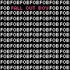
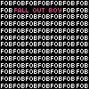
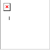
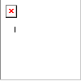

#4B0082 |
Your dominant hues are blue and magenta. You're the one who goes to all the parties but doesn't quite fit in at every one... you know what you want, but are afraid of what the world might think of it. You're a little different and that's okay with them, and if you're smart it's okay with you too. Your saturation level is very high - you are all about getting things done. The world may think you work too hard but you have a lot to show for it, and it keeps you going. You shouldn't be afraid to lead people, because if you're doing it, it'll be done right. Your outlook on life can be bright or dark, depending on the situation. You are flexible and see things objectively. |

| What Kind of Sk8er Boi is Right For You? |
| I Like Punk Skater Boys
You meet your punk skater boy at a concert. He’s in the opening band, but you’ve never heard them before. When they start to play you immediately recognize the song. Then it hits you–his band rehearses in the garage of a house down the street from you. You’ve heard them play this song every weekend, but you never paid any attention to it. While he plays and sings you realize he’s only looking at you. As you listen to the lyrics about loving “the girl next door” you are surprised to discover he wrote this song for you and he is in love with you! After he finishes he walks over to you and asks if you liked the song, you say you do, and he asks you out. When you say yes, he smiles and takes off a guitar necklace he’s been wearing and gives it to you. You still wear that necklace and never take it off! |
| Fun quizzes, surveys & blog quizzes by |
 uhh rude
uhh rude
 
 
